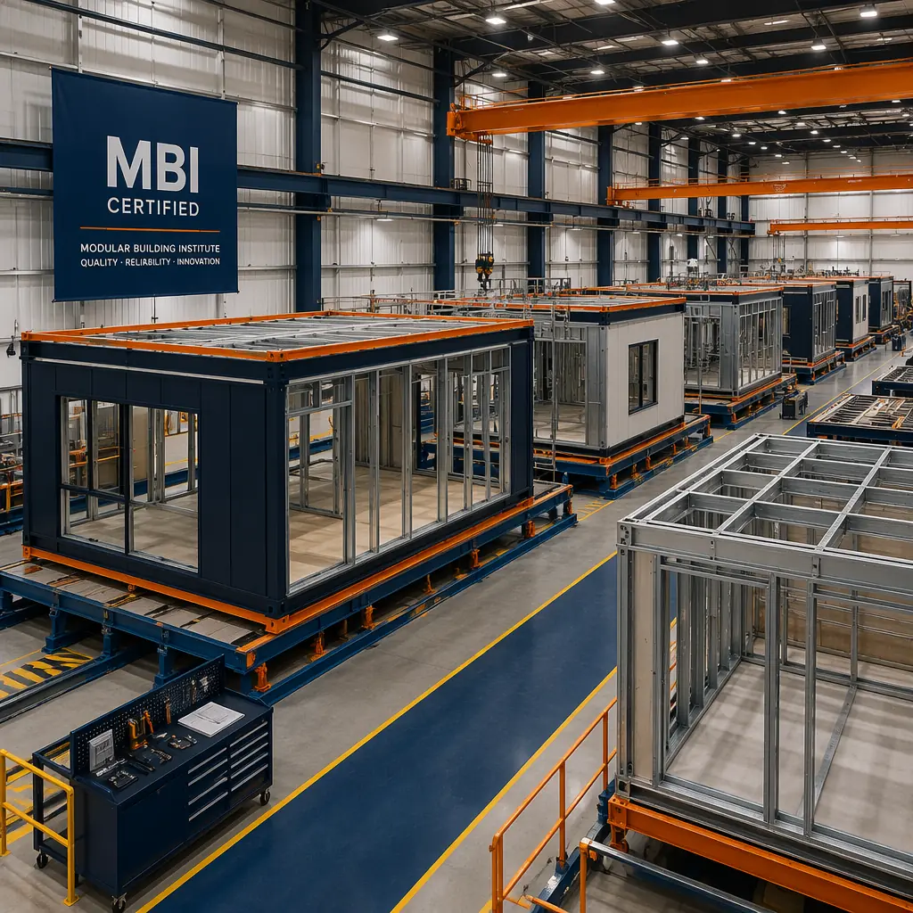

Industry Standards
Modular Building Institute (MBI) Certification Guide — What Developers & Owners Need to Know About Modular Construction Standards
Complete guide to MBI certification: the audit process, how Relocatable and Permanent categories differ, and what certified manufacturers deliver in quality, safety, and compliance for commercial developers.